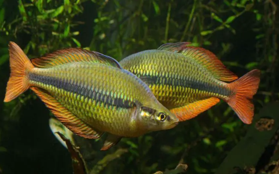

Systématique
- Ordre : Atheriniformes
- Famille : Melanotaeniidae
- Genre : Melanotaenia
- Espèce : M. herbertaxelrodi
- Auteur : Allen, 1981

Melanotaenia herbertaxelrodi, communément appelé Poisson-arc-en-ciel du lac Tebera, est une espèce spectaculaire prisée pour sa coloration jaune intense. Le corps est ovale, haut et comprimé latéralement. Les mâles adultes affichent une couleur jaune d'or éclatante sur l'ensemble du corps, traversée par une ligne latérale bleu-noir sombre qui s'estompe vers l'avant.
Le mâle peut atteindre 10 à 12 cm de longueur, tandis que la femelle reste plus petite, autour de 8-9 cm. Les nageoires dorsale et anale des mâles sont souvent bordées de rouge ou de noir, et une tache operculaire rouge est fréquemment visible. Comme beaucoup de ses cousins, les couleurs sont plus ternes chez les jeunes et ne se révèlent pleinement qu'avec une alimentation variée et une eau de qualité.
C'est un poisson grégaire, pacifique et très actif. Il doit impérativement vivre en groupe de 6 à 8 individus minimum pour respecter son instinct social. Melanotaenia herbertaxelrodi occupe tout l'espace de nage, avec une préférence pour la zone médiane et supérieure.
En aquarium, il nécessite un bac spacieux avec une grande longueur de façade pour nager librement. Bien que pacifique, sa vivacité peut perturber des espèces extrêmement calmes. Il apprécie un aquarium bien planté sur les côtés et l'arrière, laissant le centre libre pour la nage. Un éclairage matinal favorise l'éclat des couleurs et déclenche souvent des parades nuptiales spectaculaires.
Mode : ovipare, diffuseur d'œufs sur support végétal.
La reproduction est classique pour le genre. Le couple choisit un support de ponte comme de la mousse de Java ou un mop. La femelle dépose quelques œufs quotidiennement sur plusieurs jours. Les œufs sont adhésifs et transparents.
L'éclosion a lieu après environ 7 à 10 jours selon la température. Les alevins sont minuscules et nagent près de la surface dès la résorption du sac vitellin. Ils doivent être nourris avec des infusoires ou de la nourriture liquide, puis rapidement avec des nauplies d'artémias. Il est préférable d'isoler les œufs dans un bac d'élevage car les parents peuvent les consommer.
Dimorphisme sexuel : marqué chez les adultes. Les mâles sont plus grands, possèdent un corps plus haut (dos bossu) et des couleurs beaucoup plus vives. Les femelles sont plus sveltes, de couleur jaunâtre plus terne ou argentée, avec des nageoires plus courtes et arrondies.
Espérance de vie : environ 5 à 8 ans en aquarium.
L'espèce est endémique du lac Tebera et des zones environnantes dans les hauts plateaux du centre de la Papouasie-Nouvelle-Guinée. On le trouve dans les eaux claires, souvent stagnantes ou à courant très lent, entourées d'une végétation aquatique dense. L'eau de son habitat naturel est généralement alcaline et moyennement dure.
Répartition

Origine naturelle :
- Océanie : Papouasie-Nouvelle-Guinée (Lac Tebera).
- Localité type : Lac Tebera, bassin de la Purari River.
Paramètres de maintenance
Température : 20 à 26 °C.
pH : 7,0 à 8,0.
GH : 8 à 20 °dGH.
Courant : faible à modéré.
Volume conseillé : minimum 200-250 litres pour un groupe cohérent.
Régime alimentaire
Régime : omnivore.
En aquarium, il accepte tout type de nourriture : paillettes, granulés. Une alternance avec des proies vivantes ou congelées (artémias, daphnies, vers de vase) est indispensable pour préserver sa santé et l'intensité de son jaune. Un apport végétal est également apprécié.